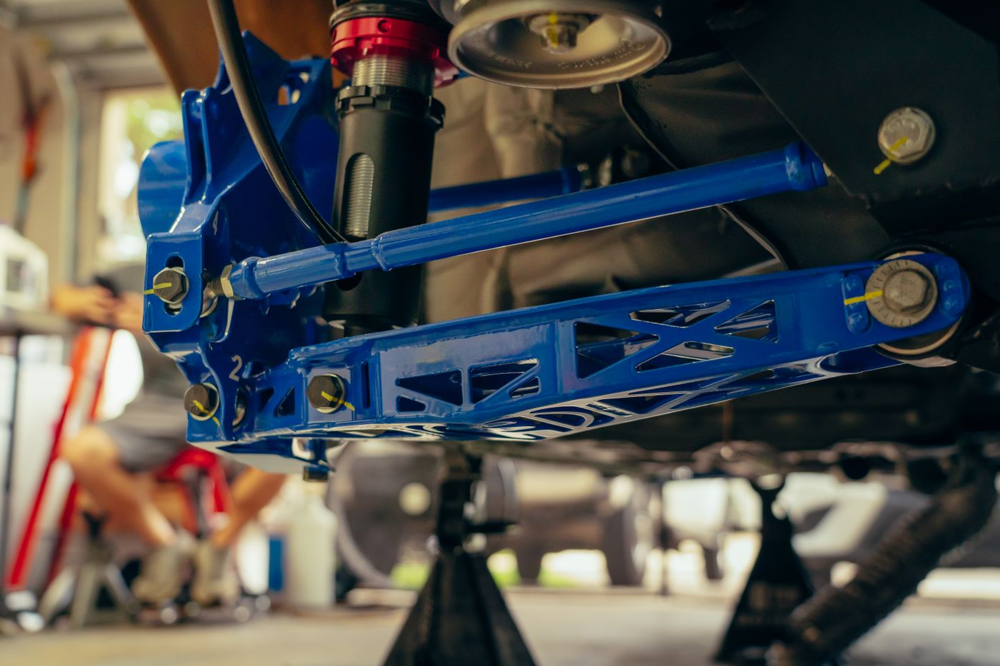
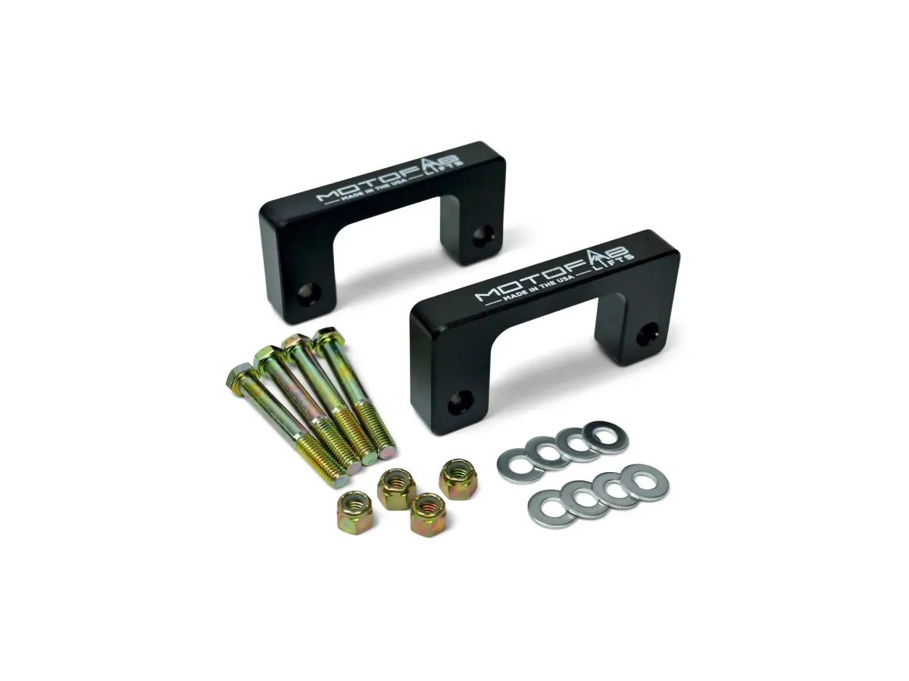
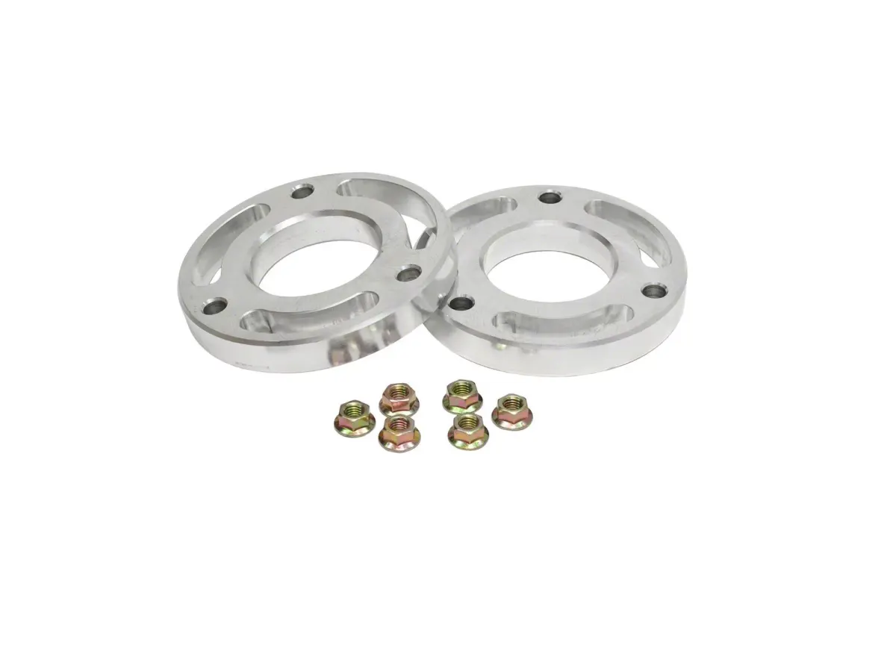
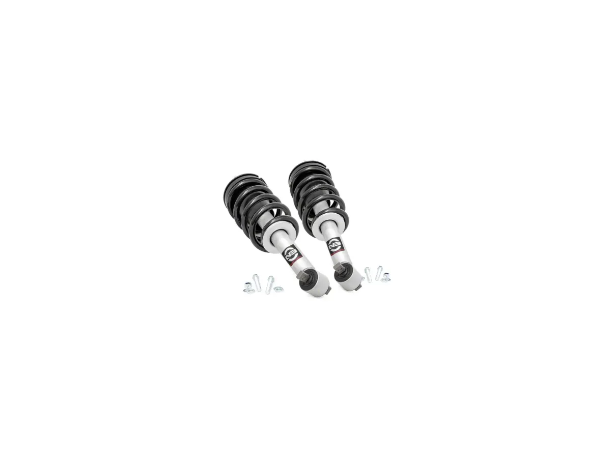
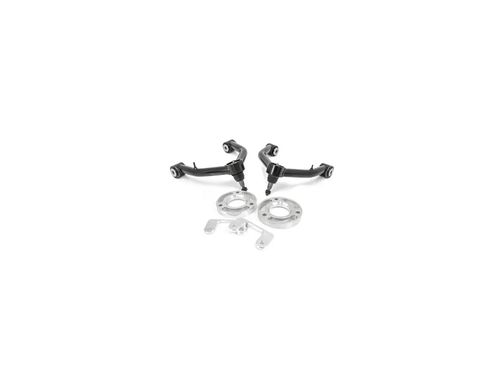

A 1.5-Inch Spacer or 1.75 Inches With Control Arms? What Each One Actually Changes
Buy the cheapest kit that gets your truck the height you measured, and put the saved money into the alignment. Past about two inches, stop comparing spacers and start comparing what the spacer does to the rest of the front end — at that point the height is no longer the expensive part. The four kits

Buy the cheapest kit that gets your truck the height you measured, and put the saved money into the alignment. Past about two inches, stop comparing spacers and start comparing what the spacer does to the rest of the front end — at that point the height is no longer the expensive part.
The four kits below run from $36.99 to $529.95 and carry 165 ratings between them. The geometry does not change with the badge: any independent front-suspension pickup behaves the same way when you move the knuckle relative to the frame.
The four designs
A lower strut spacer sits between strut and lower control arm — cheapest, nothing disassembled. An upper strut spacer sits inside the tower, which ReadyLIFT’s listing says reduces the risk of contacting the CV boot during install. A preloaded strut brings a new spring and damper, so the ride changes with the height. Upper control arms are the only one that fixes the geometry a spacer breaks.

Buy the rake you measured, not a round number
An owner of a 2019–2026 Silverado 1500 RST, under the 1.5-inch ReadyLIFT kit:
The visual rake measured closer to 1.5” and not the suggested 2” leveling kit, so I went with my gut. The ready lift 1.5” kit hit within 1/8” of even.
Measure concrete to the top of each wheel arch and buy the difference — same method on an F-150, a Ram or a Tundra. Go taller than your rake and you get a nose-high truck: a Trail Boss owner on a 2-inch strut ordered a rear block afterwards. Height is also the mechanism behind the warnings, because the upper control arm follows the knuckle up and the alignment leaves the factory window. Every listing here calls for one.

The kits, priced and checked
Prices and review counts read off each listing on 11 November 2026.

MotoFab 1.50-Inch Front Leveling Kit (19–26 Silverado 1500)
Billet aluminium lower spacer, textured black powdercoat, made in the USA, sold with hardware and instructions. Cheapest of the four by more than a hundred dollars, and the largest sample: 84 ratings at 4.8.
The listing shows fourteen reviews on the page, and the three below five stars are all from owners of something else — a Yukon SLT and two F-150s, pooled in from the wider catalogue. All eleven Silverado owners rated it five.
The hardest part was getting the inside bolt to slide past the driveshaft, while lining up the holes. — a Silverado 1500 WT owner.
- Price
- $36.99
- Fitment
- 2019–2026, Silverado 1500, 2WD and 4WD
- Lift
- 1.50 in, front
- Type
- Lower strut spacer, billet
- Stock
- In stock
See the MotoFab kit → $36.99, 84 reviews, checked 11 Nov 2026

ReadyLIFT 1.50-Inch Front Leveling Kit (19–26 Silverado 1500, Excluding Trail Boss & ZR2)
CNC-machined 6061-T6 upper strut spacer for GM 1500 struts without Adaptive Ride Control. The listing is explicit about exclusions: no Super Cruise, some wheels need a 6mm or larger front spacer to clear the caliper, minor liner trimming may be needed on a 33x11.50.
17 ratings at 4.94 sounds like the best number here, but of the ten the page shows only three are Silverado owners — the rest are Ranger, F-150, Ram, Sierra and Colorado owners writing about the same casting.
- Price
- $149.95
- Fitment
- 2019–2026, excluding Trail Boss, ZR2 and AT4
- Lift
- 1.50 in, front
- Type
- Upper strut spacer, billet
- Stock
- In stock
See the ReadyLIFT 1.5-inch kit → $149.95, 17 reviews, checked 11 Nov 2026

Rough Country 2-Inch Strut Leveling Kit (19–26 Silverado 1500, Excluding Trail Boss & ZR2)
A complete preloaded strut with a nitrogen charge, velocity-sensitive valving and pre-loaded coils — a damper and a spring, not a block, so both the height and the ride change. Rough Country recommends professional installation and the listing says so rather than hiding it.
Went with the struts over the strut spacers and glad I spent the extra money. Had them installed by an Off-road shop so I cant speak on the install process. Ride is better than the factory ranchos. Nose is slightly higher than the rear of my 24 RST but I knew that would happen based on research. — a Silverado 1500 RST owner.
The single two-star review is not about the strut: the owner had 33-inch tyres rubbing, was told this kit would fix it, and it did not.
- Price
- $349.95
- Fitment
- 2019–2026, excluding Trail Boss & ZR2
- Lift
- 2.00 in, front
- Type
- Preloaded strut, spring and damper included
- Stock
- In stock
See the Rough Country strut kit → $349.95, 14 reviews, checked 11 Nov 2026

ReadyLIFT 1.75-Inch Front Leveling Kit with Tubular Control Arms (19–26 Silverado 1500 Trail Boss)
Top and bottom strut spacers plus heavy-duty tubular steel upper control arms with maintenance-free pivots — the only pick here that corrects the geometry the others leave changed. Specified for the Trail Boss; a separate part number covers the ZR2.
The reason I went with this kit is because it came with the upper control arms. If you’ve ever put on a leveling kit without them, you’ll know the stress that is put on your control arms, tie rod ends and ball joints. — a Silverado 1500 Custom Trail Boss owner.
50 ratings at 4.88, 88% five stars and 12% four with nothing below; of the 29 reviews the page shows, 28 are Silverado owners. On a part whose only purpose is correcting geometry, no wear or alignment complaint across that sample is the evidence. What it does collect is unrelated — one four-star owner worried about the upper strut bolts having only a couple of threads to torque against the supplied lock nuts.
- Price
- $529.95
- Fitment
- 2019–2026, Silverado 1500 Trail Boss
- Lift
- 1.75 in, front
- Type
- Top and bottom spacers with tubular upper control arms
- Stock
- In stock
See the ReadyLIFT kit with UCAs → $529.95, 50 reviews, checked 11 Nov 2026
Which one to buy
Standard Silverado 1500 and you measured 1.5 inches, take the MotoFab and put the money into the alignment. Want the upper-mount design, read the ReadyLIFT 1.5-inch exclusions first — no Super Cruise, no Trail Boss or AT4 suspension. Want the ride to change and not just the stance, take the preloaded strut. Trail Boss, or going past two inches, take the control arms: below that height they are insurance, above it they are the part that keeps the front end serviceable.
Frequently asked questions
Do I need an alignment after a leveling kit?
Yes, on every kit here. The listings say so, the reviews say so, and it is the one step that turns a height change into a tyre-wear problem if you skip it.
Will a leveling kit void my warranty?
A spacer on its own generally does not, but a front-end failure after a suspension modification will get looked at. In the US the Magnuson-Moss Warranty Act puts the burden on the manufacturer to show the modification caused the failure. Keep the receipts.
CarModReview may earn a commission from purchases made through links on this page, at no extra cost to you.
Topics
- Suspension
- Rough Country
- ReadyLIFT
- Silverado 1500
- F-150